AI Academy · Level 2 · Grade 7 · Week 11 · Student lesson
Training and Testing
Learn to understand, design, build, test and explain AI systems responsibly.
Project: Transparent Book Recommender
Before you start
AI-1 Week 15: using errors to revise makes them development evidence.
Plan time to read, investigate and explain. Keep predictions separate from observations.
Student lesson · 1 of 17
Your mission
Your learning target
I can choose a split unit that matches the intended prediction claim.
I can keep related examples together and audit group overlap.
I can record split roles counts and limits before model evaluation.
Remember before reading
Close your notes first. A rough first answer helps us choose the right starting point; it is not a score for your ability.
Without opening the old lesson, explain one key idea from Human Classifier Simulation. Give an example and a mistake that the idea helps you avoid.
Without opening the old lesson, explain one key idea from Operational Labels. Give an example and a mistake that the idea helps you avoid.
Without opening the old lesson, explain one key idea from Loops and Stopping. Give an example and a mistake that the idea helps you avoid.
After trying, check the relevant lesson or ask your teacher. Change the part of your explanation that the evidence shows was wrong.
Week 11: Training and Testing
The test set estimates performance on unseen cases.
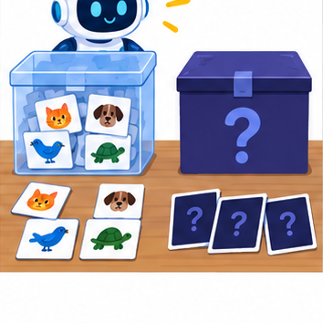
THINKER MISSION
Create a fair split before anyone sees the mystery cards.
Thinker name and date:
Readiness for the connected explanation
Why does agreement between two annotators not prove their labels are correct?
This week’s end goal
By the end, I can split related records by group when evaluation concerns new groups.
Student lesson · 2 of 17
Notice the evidence
PICTURE STORY
Notice → Predict → Explain
Begin with visible evidence. Do not explain more than the picture and information support.
MYSTERY
The learners must use training and testing to solve a problem. What information do they have? What decision or calculation do they make? What would count as evidence that it worked?
Three observations (what you can point to):
My prediction and the clue supporting it:
A closer explanation
A model may seem successful when its test examples closely resemble examples it already learned from. Imagine several pictures taken seconds apart during one robot trip. They have different picture IDs but share a route, lighting and objects. This week you will assign entire trips to separate sets and explain what the resulting evaluation could measure. No model is fitted in this lesson.
Our invented twelve-row dataset contains frame descriptions from six trips. Each row is one frame; the group is its trip ID. The proposed claim concerns new trips on the same practice route under similar conditions. We therefore keep all frames from a trip in one set. To claim success on new routes, grouping only by trip would not be enough.
| Trip group | Frame IDs | Assigned role |
|---|---|---|
| A | A1 A2 A3 | Training |
| B | B1 B2 | Training |
| C | C1 | Training |
| D | D1 D2 | Validation |
| E | E1 E2 | Test |
| F | F1 F2 | Test |
This small fictional assignment is for learning split design, not evidence of real performance. Each frame belongs to one group and one set. Store frame and trip IDs as metadata for auditing; do not assume an ID is an appropriate prediction input.
Student lesson · 3 of 17
See how it works
VISUAL MECHANISM
Input → Process → Output
Trace the information. At each stage, ask what changed and how you could test it.
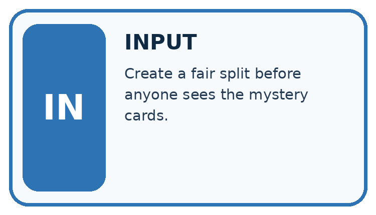
↓
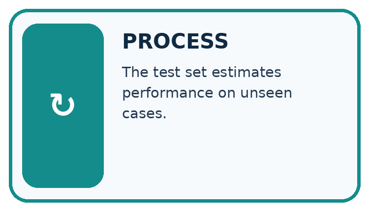
↓
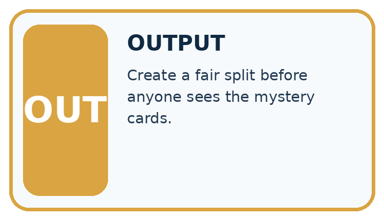
Which stage could fail even when the other two are correct? Explain:
A closer explanation
Training data fits the model. Validation data helps compare choices such as candidate rules. Keep the test set for a final check after those choices are fixed. A learner who repeatedly changes the model after seeing test results has used that set for development; its score is no longer an untouched final check.
train_groups = {"A", "B", "C"}
valid_groups = {"D"}
test_groups = {"E", "F"}
shared = ((train_groups & valid_groups)
| (train_groups & test_groups)
| (valid_groups & test_groups))
print(sorted(shared))
print(len(train_groups), len(valid_groups),
len(test_groups))The first line of output is []: no trip ID is shared between any pair of sets. The second is 3 1 2: training, validation and test contain three, one and two trip groups. The symbol & finds shared values and | combines sets. These are group counts, not frame counts.
Keep each trip in one role
This audit assumes the lists correctly describe every frame assignment. It cannot find an omitted frame, a wrong trip ID, a copied image with a different ID or a feature containing the answer. Check the assignment table and source records too.
Connect the picture and the explanation
Point to the input, the deciding step and the result in this week’s visual. Explain the same step in ordinary words. A picture helps when you can say what each part represents.
Student lesson · 4 of 17
Compare the cases
CASE GALLERY
Four Tests, Four Kinds of Evidence
A system is not understood until it survives more than one comfortable example.


NORMAL CASE: predict and name evidence. BOUNDARY CASE: predict and name evidence.


MISSING INFORMATION: predict and name evidence. TRANSFER CASE: predict and name evidence.
Which case is most likely to reveal a hidden assumption? Why?
Change one thing in the pictured case
Change: Give A2 a new filename without changing the book it depicts.
Prediction: Its group is still A; the original related examples still cross the split.
Reason: Renaming a row does not remove the relationship between scans.
Student lesson · 5 of 17
Words that unlock the idea
VOCABULARY LAB
Words You Can Use to Reason
A definition matters when you can recognize the idea, use it, and contrast it with a near-miss.
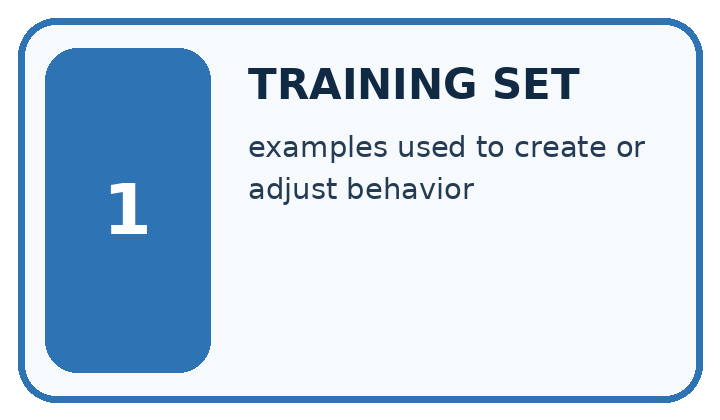
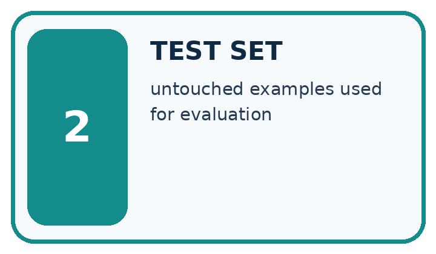
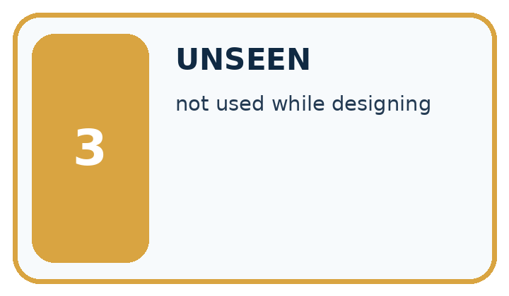
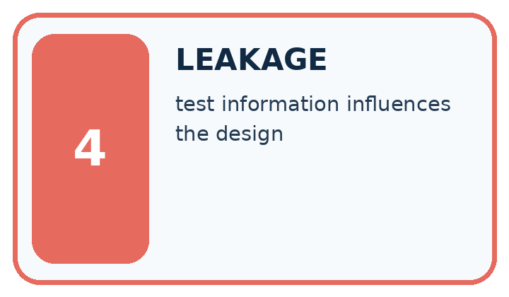
| Word | My own example | Not this / boundary |
|---|---|---|
| training set | Examples used to adjust a model's parameters or fit learned preprocessing. | |
| test set | Data reserved for evaluating a selected system; final test data must not influence its development. | |
| unseen | Not previously used for the development, practice or selection being evaluated. | |
| leakage | Use of information during development or prediction that should be unavailable for a fair evaluation of the intended task. |
Words used in the closer explanation
| Word | Meaning |
|---|---|
| Validation set | Separate examples used to compare choices during development |
| Group | Related examples that must stay together for a stated evaluation goal |
Student lesson · 6 of 17
Follow a worked example
WORKED EVIDENCE
Reason Step by Step
Predict first. Then check each step. A correct answer without visible reasoning is incomplete evidence.
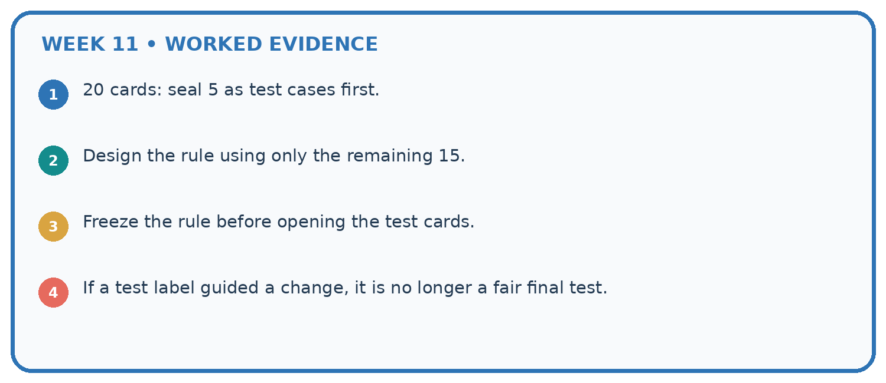
1. 20 cards: seal 5 as test cases first.
2. Design the rule using only the remaining 15.
3. Freeze the rule before opening the test cards.
4. If a test label guided a change, it is no longer a fair final test.
Recalculate, retrace, or restate the reasoning in your own representation:
CHECK Did the evidence answer the exact question? Did the total, path, or source record stay consistent?
A closer explanation
Suppose A1 and A2 are in training while A3 is in test. The frame IDs differ, but A appears in both sets. Shuffling the rows does not remove this relationship. For our new-trip claim, move all A frames to one chosen role and record the revised assignment before evaluating a model. Do not copy A3 into both roles.
Audit that every source frame occurs exactly once, no group crosses roles and the assigned counts sum to the source count. In our worked plan the row counts are six training, two validation and four test: twelve total. A fixed random seed can reproduce a random split, but it cannot make a flawed grouping choice fair.
A split record names the prediction goal, source version, group definition, exact assignments, row and group counts, date and any random method or seed used. For this hand-assigned example, record that there was no random sampling. Keep label-rule versions and unresolved review statuses traceable as in Week 5.
Learn from the worked case
Cover the result before checking it. Say what is given, choose the procedure, and follow one step at a time. Then uncover the result and explain your first mismatch. Ask why a step is allowed, not only what number it produces.
A pictorial worked case: Training and Testing
A fictional catalogue model learns from scans of book covers and will face previously unseen books.
The facts we will use
Book A has scans A1,A2; B has B1,B2; C has C1,C2; D has D1,D2.
Proposed training A1,B1,C1; validation A2,D1; test B2,C2,D2.

Read the picture one step at a time
Why this result follows
Different scan IDs do not make examples independent books. A model may recognise repeated cover details from another view. Grouping by book matches the intended claim about new books and makes the split inspectable. The repaired split has four training, two validation and two test scans, but only two, one and one books respectively.
What this example does not establish
One validation book and one test book provide very limited diversity even though no groups overlap.
Read the labelled picture: How many distinct books are in each repaired role, and why report that as well as scan counts?
Change one thing: Give A2 a new filename without changing the book it depicts. Predict the result before checking the explanation. What remains the same?
Student lesson · 7 of 17
Find and repair a mistake
ERROR DETECTIVE
Compare → Diagnose → Repair
Do not patch the answer. Find the earliest unsupported assumption, wrong step, or weak evidence.
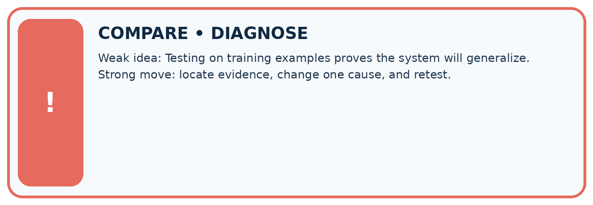
| Evidence record | Expected | Actual | Likely cause / next test |
|---|---|---|---|
| normal case | works | ||
| boundary case | stated rule | ||
| missing input | safe response | ||
| fresh transfer | generalizes |
Repair one cause. Why is this repair better than changing several things?
A closer explanation
Fit learned preprocessing, such as scaling values using an average, on training data and apply the stored transformation to the other sets. Using the full dataset to learn such values would let held out information influence development. We will implement preprocessing later; group separation alone does not solve that issue.
Record exclusions and label-review policies before scoring. Do not remove difficult test cases because they reduce the score. If a genuine data error requires repair, document it and its effect on the evaluation rather than claiming the old test stayed untouched. Next week you will build a simple baseline using these split roles.
Student lesson · 8 of 17
Practise together
LOGIC STUDIO
Trace Before You Run
Block code, pseudocode, tables, and diagrams are different ways to expose the same reasoning.

SET evidence_record PREDICT expected_result RUN one normal case and one boundary case COMPARE actual_result with expected_result IF different: locate first cause; change one factor; RETEST EXPLAIN result, limitation, and next safe step
Trace one input. Which line changes the state or chooses a path?
A closer explanation
For new trips on a familiar route, holding out whole trips addresses within-trip similarity. For new routes, hold out entire routes so all their trips stay together. For forecasting future events, a time-respecting split may be needed: training on later events to predict earlier ones would not represent that intended use. The evaluation question determines the separation.
There is no universal percentage that makes a split valid. Large groups can make row counts unequal. Check that the sets can support the intended comparison, including enough relevant cases and labels, without moving individual related frames just to hit a percentage. This twelve-row example is too small to justify a reliable performance claim.
Practise with less help: Distinguish frames from groups
Use workbook W2 for the connected example “Splits and related examples”. First fill the input and rule boxes. Try the middle steps before asking for a hint. After a hint, try the next step yourself.
| Plan | Do | Check |
|---|---|---|
| What is given? Which rule or procedure applies? | Record each intermediate step. | Does the result follow? What remains unknown? |
Explain your trace to a partner. Your partner points to one step to check. Swap roles on the next case. Each person writes their own explanation.
Check your reasoning
Use the worked case for Splits and related examples. Proposed explanation: “Different row IDs mean independent examples”. Decide whether this explanation is supported. Point to the step or supplied fact that decides; explain your repair if needed.
Answer on your own before discussion. If you are unsure, say which step you need help with.
Explain the picture
How many distinct books are in each repaired role, and why report that as well as scan counts?
This is supported practice. Keep the separately named independent case for an attempt before feedback.
Student lesson · 9 of 17
Run the investigation
EVIDENCE LAB
Predict → Test → Record → Explain
Keep expected and actual results separate. Surprises are useful data when recorded honestly.
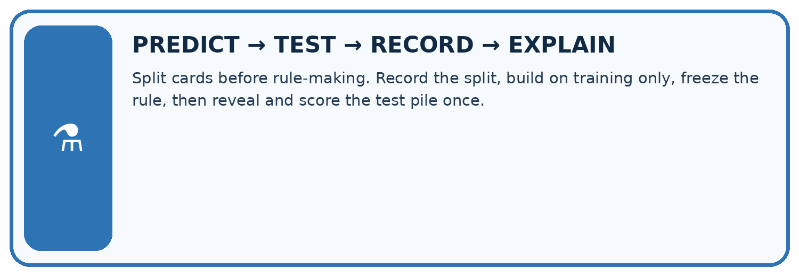
Split cards before rule-making. Record the split, build on training only, freeze the rule, then reveal and score the test pile once.
| Test / input | Prediction | Actual | Evidence / calculation | Change or keep? |
|---|---|---|---|---|
| normal | ||||
| boundary | ||||
| missing | ||||
| fresh transfer |
What did the hardest test teach you that the normal test did not?
Plan → try → check
Before trying: what do I expect, and why? While trying: which step could first go wrong? Afterwards: what did I actually observe, and what should change? Keep “not run” if you only traced the procedure.
Student lesson · 10 of 17
Build your understanding
MASTERY
From Knowing the Word to Owning the Idea
Move upward only when you can produce evidence without copying the worked example.

1 • NAME: Define the concept without repeating the textbook.
2 • TRACE: Show the information, state, branch, calculation, or evidence path.
3 • APPLY: Solve a different example independently.
4 • CHALLENGE: Find a boundary case, counterexample, or unfair outcome.
5 • EXPLAIN LIMITS: Say when the result should not be trusted or used alone.
My strongest evidence of independent understanding:
Student lesson · 11 of 17
Connect your project
CUMULATIVE PROJECT
Transparent Book Recommender
Every week adds one inspectable piece. The system must show how it reached a result.
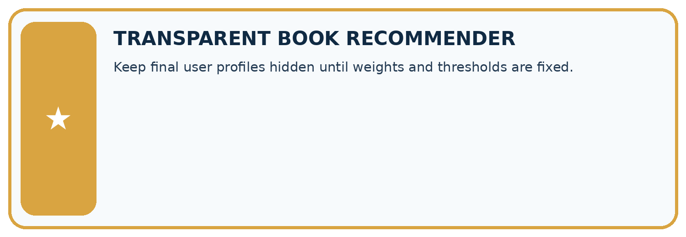
THIS WEEK’S CHECKPOINT Keep final user profiles hidden until weights and thresholds are fixed.
SYSTEM MAP Reader need → allowed inputs → transparent rule or score → ranked candidates → explanation → test record → human decision
What will you add, change, or verify in the project this week?
What should remain under human control?
RESPONSIBLE DESIGN Collect only necessary information. Show uncertainty and limits. Never confuse a ranking with a fact about a person.
Evidence for your project
Group the recommender’s related reviews, editions or repeated-user examples according to its intended evaluation claim.
Student lesson · 12 of 17
Show what you know
INDEPENDENT MASTERY PROOF
Explain • Transfer • Test • Defend
Complete this page without copying the worked example. Your reasoning matters more than decoration.
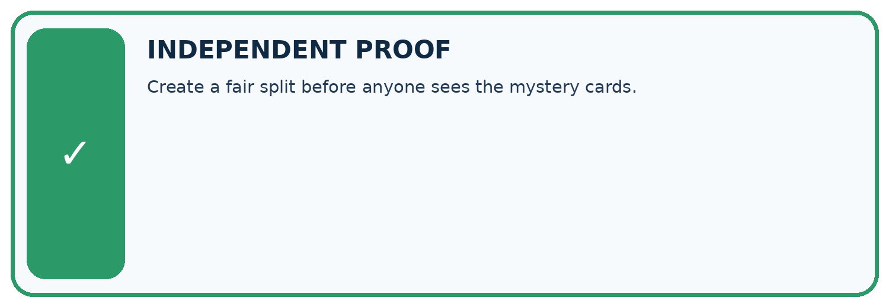
CHALLENGE Create a fair split before anyone sees the mystery cards.
1. My fresh example, trace, calculation, or design:
2. My evidence that it works (include a boundary or missing-data case):
3. One limitation, fairness concern, or situation needing human review:
SELF-CHECK □ I explained the mechanism □ I used evidence □ I tested a fresh case □ I named a limitation □ I can answer ‘why?’
Student lesson · 13 of 17
Study a complete case
Week 11 Worked case
Use the supplied details to practise the weekly concept before attempting the independent question. This case extends the illustrated lesson.
The situation
A rule is developed and evaluated using the same books A–H.
The question
Why does this not establish unseen performance?
Worked explanation
Those cases influenced the rule. Reserve different labelled books that do not influence construction or revision.
Explain it in your own words
Which detail supports the answer, and why does it matter?
Trace the supplied case visually
Separate development from fresh evaluation
| Evidence or stage | Value or result |
|---|---|
| Books A–H | Influenced the rule |
| Reserved books | Did not influence construction |
| Revision | Keep final cases separate |
A rule is developed and evaluated using the same books A–H.
Why does this not establish unseen performance?
Those cases influenced the rule. Reserve different labelled books that do not influence construction or revision.
Student lesson · 14 of 17
Try a new case independently
Independent case: Audit and repair independently
Eight frames come from trips P (P1 P2 P3), Q (Q1 Q2), R (R1), S (S1 S2). A proposed split is training P1 Q1 R1; validation P2 S1; test Q2 P3 S2. Identify shared groups for each pair of sets. Repair it by assigning P and Q to training, R to validation and S to test. List all frames in each role and give row and group counts. State one limit of the repaired plan.
Attempt this case before feedback. Record any help. Earlier examples below are further practice; a case already practised with feedback cannot establish fresh transfer.
Week 11 Independent application
Close the worked explanation. Apply the idea to this different question without copying.
You tune a rule using cards 1 to 8 and test it on cards 9 and 10. After seeing card 9's error you change the rule. Is card 9 still untouched test evidence?
My answer, with a trace, calculation or supporting evidence
Create and test
Change one relevant detail. Predict the result before testing. Include a boundary or missing-information case when it helps reveal a limit.
My changed input and expected result
Connect to your project
Keep final user profiles hidden until weights and thresholds are fixed.
The evidence I will keep
Your teacher has the independent answer and scoring criteria. Complete the matching workbook week to keep your practice evidence together.
Transfer practice from the original programme
A team tests five rule versions on the same ten books and chooses the highest score. It calls the final score an unbiased unseen test result. Explain the issue and revise the evaluation plan.
Use feedback to improve
Attempt the independent case before hints. Record whether you worked alone, used a hint or followed a model. After feedback, fix the first unsupported step and explain why it changed. A later check uses a changed case, not a copied answer.
Student lesson · 15 of 17
Your lesson route
Start with this question: A fictional catalogue model learns from scans of book covers and will face previously unseen books.
| By the end, I can | How I will show it |
|---|---|
| Choose a split unit that matches the intended prediction claim | Explain the deciding step, show a trace or test, and state one limit. |
| Keep related examples together and audit group overlap | Explain the deciding step, show a trace or test, and state one limit. |
| Record split roles counts and limits before model evaluation | Explain the deciding step, show a trace or test, and state one limit. |
Remember → watch and explain → try with help → investigate → try independently → keep project evidence. Your teacher may spread this lesson across several classes.
Keep your first prediction. Compare it with what the evidence shows and explain any change.
Student lesson · 16 of 17
Finish and return
Close your notes. Explain this goal in your own words: Choose a split unit that matches the intended prediction claim
If you are unsure, return to the worked picture and explain one arrow. If you are ready, change an input or assumption and justify your prediction.
Save your workbook evidence. At the next review, try a different case before opening your old answer.
Student lesson · 17 of 17
Supported practice, repair and portfolio
Use this supported practice once, in the browser or on paper. Keep the reserved independent assessment for a separate first attempt before teacher feedback.
A fictional catalogue model learns from scans of book covers and will face previously unseen books.
Practice 1: explain the deciding evidence
Which labelled step matches this detail? Keep every scan from one book in exactly one role before fitting.
1. Group repair
2. Choose unit
3. Find leakage
4. Freeze assignment
Hint if needed: Read the steps in the pictorial case. Match the supplied detail to the stage that performs or records it.
After your attempt, compare with the supported explanation: Freeze assignment Keep every scan from one book in exactly one role before fitting. Different scan IDs do not make examples independent books. A model may recognise repeated cover details from another view. Grouping by book matches the intended claim about new books and makes the split inspectable. The repaired split has four training, two validation and two test scans, but only two, one and one books respectively.
Practice 2: explain the deciding evidence
Changed-case practice: Give A2 a new filename without changing the book it depicts. Which conclusion is supported by the supplied facts?
1. Its group is still A; the original related examples still cross the split.
2. This one example guarantees correct results for every future input.
3. We can decide the result without examining the changed input or the procedure.
Hint if needed: Use the changed condition and the deciding step in the pictorial trace. The answer must say what follows from those facts.
After your attempt, compare with the supported explanation: Its group is still A; the original related examples still cross the split. Renaming a row does not remove the relationship between scans.
Repair a missing building block
Review Human Classifier Simulation (ai-2/10). Goal: Construct a classifier with a stated input format, selected rule and recorded output. Short practice: Why are J and M initially treated differently even though both are illustrated mysteries?. Return to this week and explain what you changed.
Review Operational Labels (ai-2/8). Goal: Apply a category definition using explicit evidence and boundary rules. Short practice: Why can we not resolve the disagreement merely by taking a majority of reviewers?. Return to this week and explain what you changed.
Review Loops and Stopping (ai-2/5). Goal: Trace variable values before and after each loop iteration. Short practice: Why is report 0 correct for the original loop, and why is equality-only stopping risky here?. Return to this week and explain what you changed.
Predict, run and debug
The browser lab lets you edit the supported Python examples already included in this lesson. Predict first, run, inspect the actual output or error, change one input, then run again. Keep code, predictions, actual results and a reasoned revision together. On paper, label your result as a trace rather than an execution.
Keep your completed work
Use Download completed work in the hosted lesson to export your answers, reflections, practice feedback and code-run evidence. Open the HTML copy to read or print it. Drafts stay in this browser when storage is available; clear drafts on a shared device.